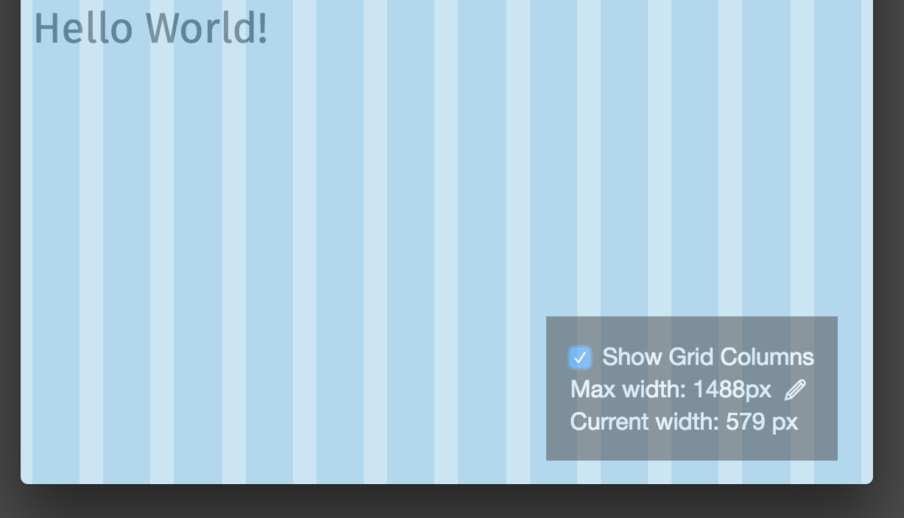
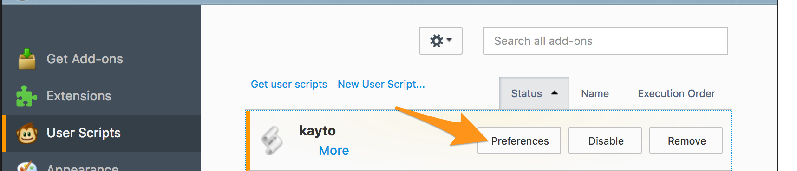

Kayto
Your UI Sidekick
Overview
Kayto is a minimal 12 column layout grid. It’s customizable. It’s got a debugging widget.
The fixed width columns touch. I.e. no margins. The gutters are built with padding and are the responsibility of the column itself.
Usage
Usage method 1: Include the styles and Javascript in your page via NPM.
npm install kayto<link href="node_modules/kayto/dist/kayto.css" rel="stylesheet">
<script src="node_modules/kayto/dist/kayto.js" type="text/javascript"></script>Usage method 2: Include in a live site via Greasemonkey.
- Install the Greasemonkey Firefox add-on.
- Navigate to the github source user script and click "Raw" to prompt the installation.
- Edit the script preferences and enter the domains/pages where you wish to add the Kayto widget. Note: you can use
*as a wildcard to match domains and pages.